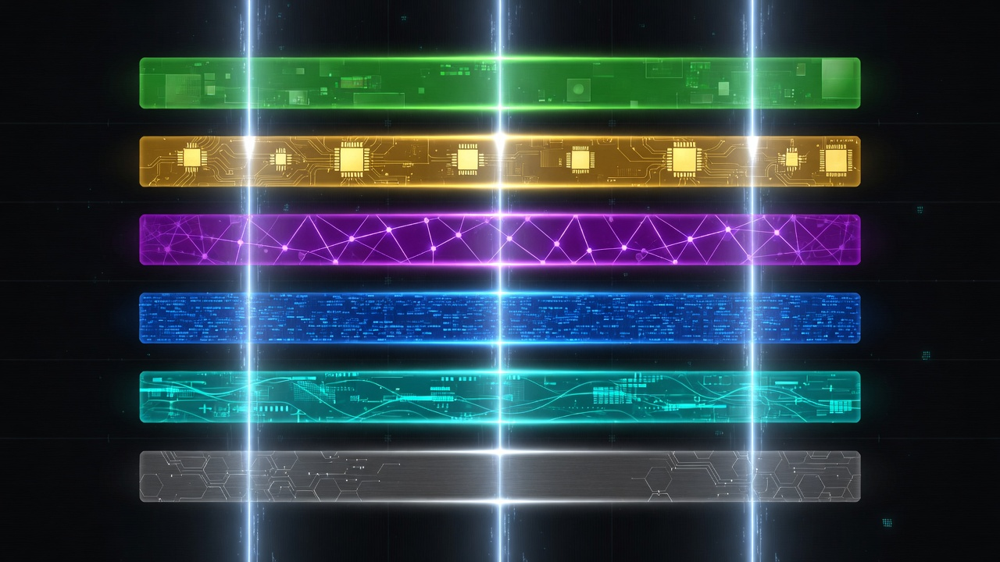

The Book of Grok's Heart
From GCC 16.2 to one driver named g16
Grok16 began as a question: *Can we own the full compile chain for field-native execution without forking reality?*
The answer shipped as:
vendor/gcc (16.2.0) → build/gcc → bin/g16 (unified driver)
→ libexec/grok16/{g16-cc, g16-cxx, g16-ld-bfd}
The unified driver discerns C, C++, Python, and ASM. g++16 is a symlink. One entry point; many faces — like iron plate triad (assembly → entropy → field).

Self-host chain and release 3.0
RELEASE-3.0.md and wiki/Speed-Bench.md document the release chain:
test-battery-releasetest-battery-belt- Versioned
SPEED-BENCH-REPORT.md
Research receipt (reference host): C++ belt_2_0 ~85M ops/s; host g++ ~87M ops/s; Python interpreter ~0.7–0.8M ops/s. Dev default is uncompiled normal speed per field-exec-uncompiled-doctrine.json.
Integration consumers
grok16-integrate.sh wires:
- NewLatest/Queen (RTX build, g16+ninja)
- World_Redata
field_g16.hh(gnu++26) - ZOCR field compiler
- PythonG / Final_Ear
Field Research treats Grok16 as infrastructure, not a side project. Compatibility layer 2 (Program interop) references pythong_tools.py and Queen↔NEXUS jump.
Compiler sense — profiles before compile
g16-compiler-sense-doctrine.json defines the ladder:
field_opt → expert → heavy → forever
g16-compiler-sense-plate.py reads meld + bridge posture. Plate meld bench doctrine records: meld helps profile selection (−413 ms compile when sense picks expert over static belt_2_0), not raw ELF throughput.
Safety gates on the forge
grok16-single-fabric-doctrine.json lists gates:
g16-field-mandateg16-ironclad-sanityfield-depth-singularizerqueen-field-sanitysovereign-linear-time
No gate passed → no release binary trusted. Diagnostic mode includes g1id-baseline.py and ironclad-field-sanity.py in secure baseline scripts.
Research conclusion
The forge produces one driver that speaks field dialects. Combinatorics chooses which dialect face (belt, runner, emulator). Compatibility layers pre-bake the stack so the operator rides, not cranks.
Next: Chapter 5 — single fabric and belt_2_0 knowing.